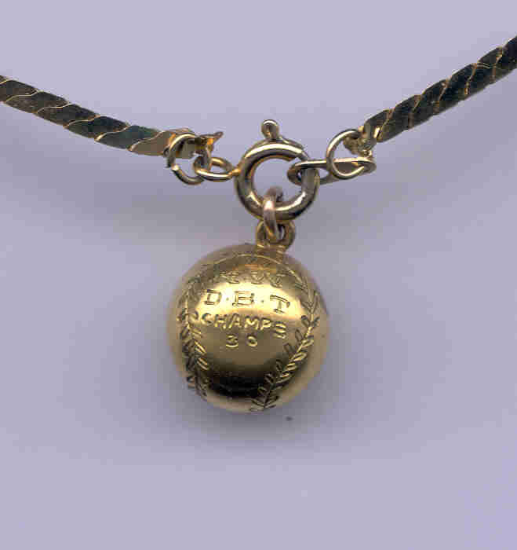
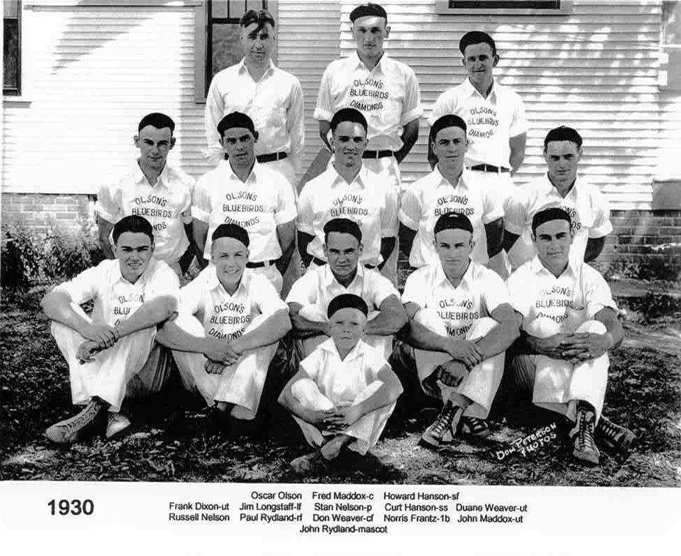
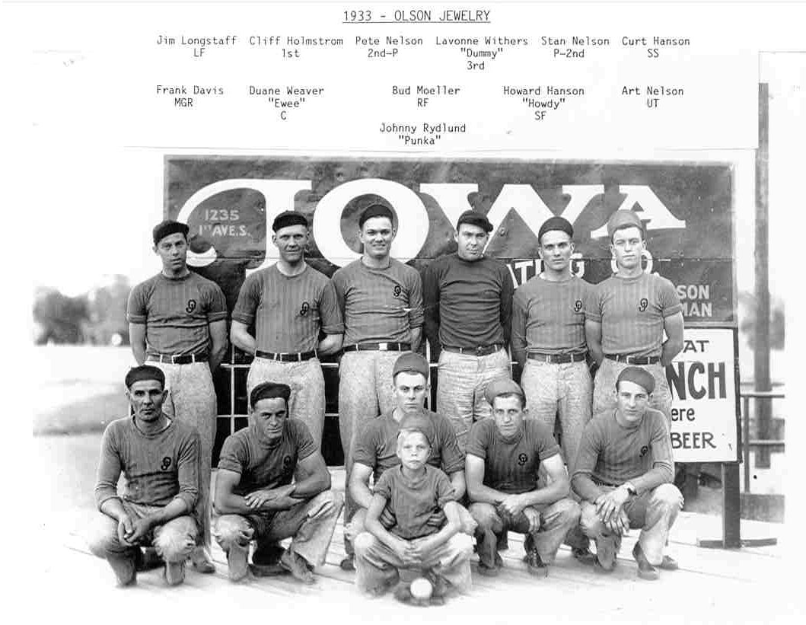
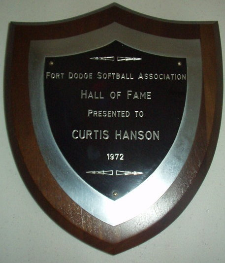
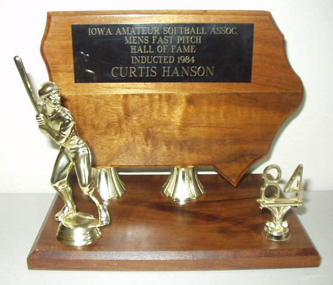

FASTPITCH SOFTBALL HISTORY –
1930s (inducted 1984)
From his daughter, Sherron –
I sent five things: a
picture of the '30 charm, two pictures of my Dad on two Olson Jewelry
teams-'30 and '33, and digital pictures of the two trophies that Dad
received-one for the Fort Dodge Hall of Fame and the other for the Iowa Hall of
Fame. If you can hotlink my Dad's name on your website with any of these
pictures, it would be great. I could also send you a disc copy if the
email isn't satisfactory. The charm read NW- DBT-Champs-30 (Northwest
Diamond Ball Tournament).
As I indicated, I got
the copies from Al Nelson. He had visited with Irv
Kawarsky, and Irv gave him
my address. I'd purchased one of Irv's book about the history of
When you look at
the names in the picture, you'll notice that some of the names
are the same. I believe Stan and Pete Nelson were brothers. Art
Nelson could be a relative to the Nelson's, but I don't know. I
THINK he was a neighbor of my Dad's, but I do know that he was the best man at
my parent's wedding. Howard Hanson was my Dad's brother.
Baseball was a major
part of my Dad's life. He would listen to two games on the radio and
watch TV at the same time. My first trip to a professional game (it
was a LONG time ago) was to
You mentioned giving the
charm to Olson's Jewelry. That my be an
option. One of my friends (who was in
Thank you again for any
help,
Sherron
Hanson Kolb




